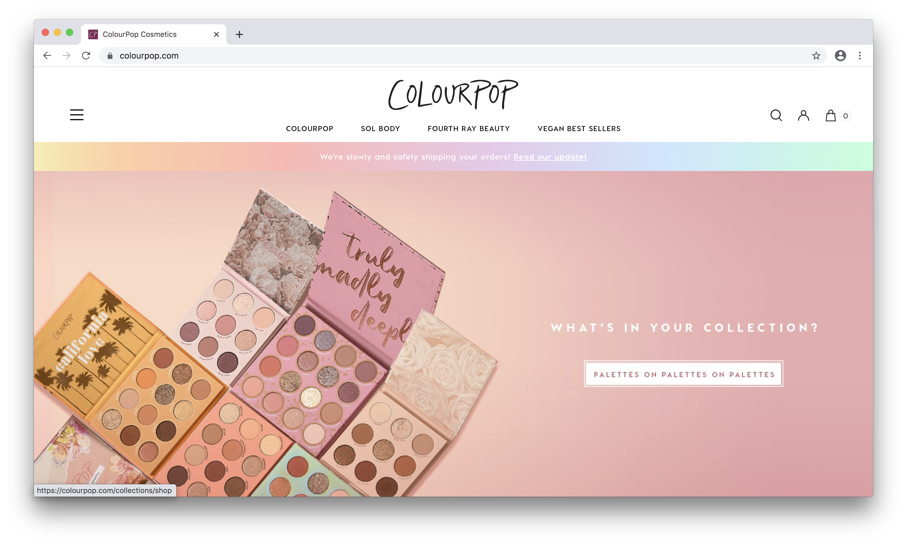
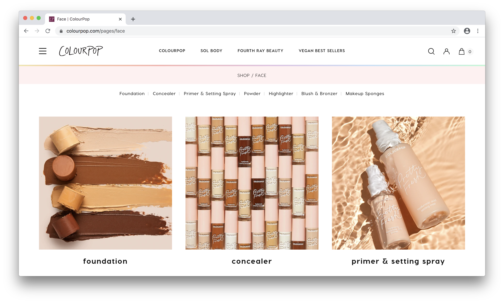
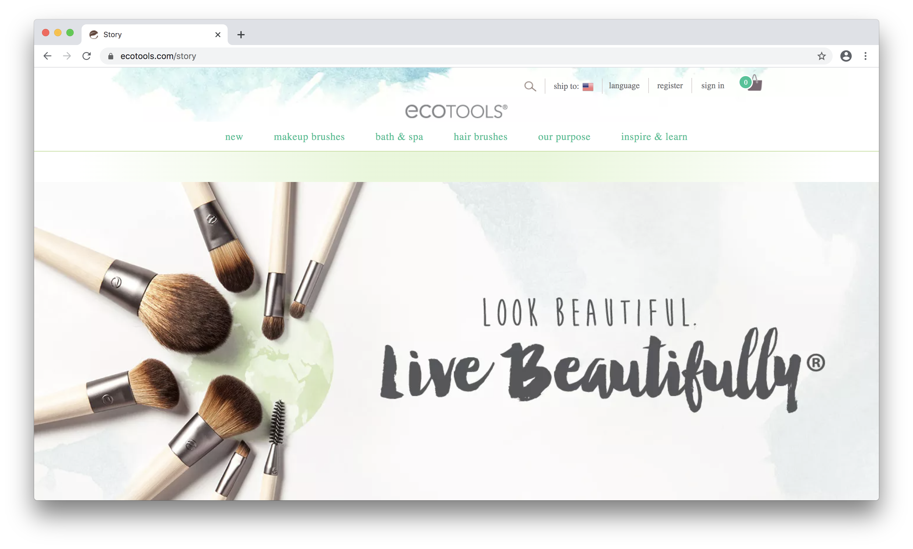
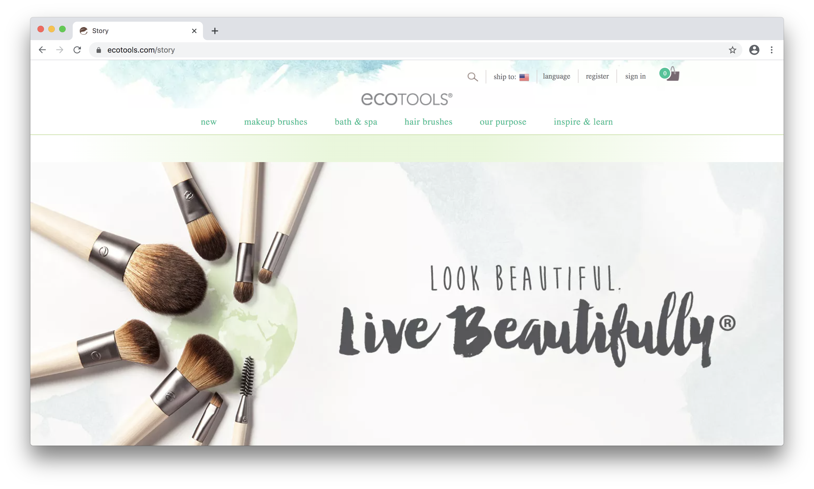
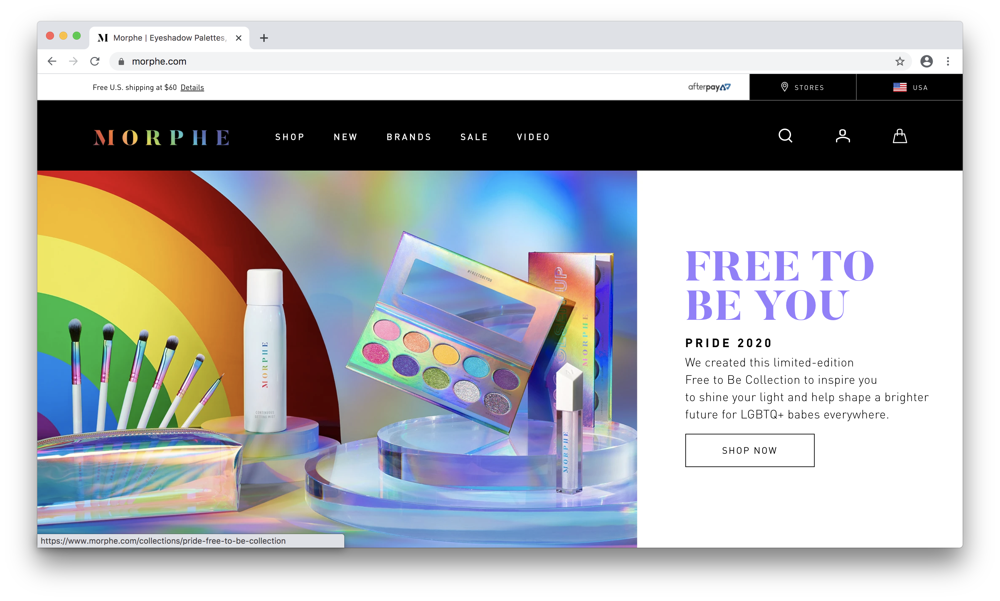
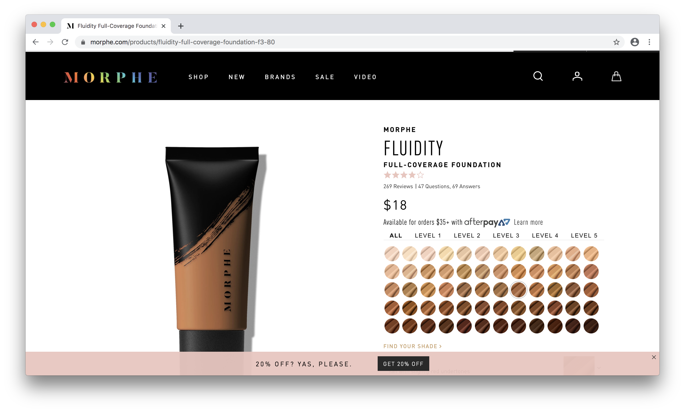

Final project proposal
Introduction
Confident Makeup
Confident Makeup is a makeup brand that sells a variety of products from foundation to skincare. Confident Makeup will aim to provide high-quality products that consumers can feel confident in purchasing. Consumers will feel confident because these products will make them look and feel great about their appearance and the products will come in environmentally-friendly packaging leaving consumers feeling confident in supporting the business.
Target audience
The target audience of Confident Makeup will be women and men, boys and girls, who enjoy using makeup as a form of artistry. It is very important to note that Confident Makeup will provide products that work for ALL skin tones and types. People who use this site will be people who are looking for makeup that they can feel good about purchasing because of its high-quality and the active effort the company makes in helping the environment.
The primary task and goal of this company, as said in the previous answer, is to provide makeup that works for ALL skin tones. Confident Makeup will display a large range of shades for each product where ideally everyone that visits the site, no matter what their ethnic background, sexual orientation, or gender can find something that works for them. This website will also show pictures of models from all different backgrounds, wearing the products to emphasize that beauty is diverse and diversity is beautiful.
Comparative analysis
Colourpop
 Ecotools
 

Morphe
 Website content
Home
Confidence is beautiful
[Woman in makeup smiling]
[Makeup products]
About
Diversity is beautiful
At Confident Makeup, we aim to provide makeup that helps grow the confidence of our customers.
Since 1999, we have had two goals in mind for our brand. Our first goal was to provide high-quality products that all come in environmentally friendly packaging, so you can feel confident about your purchases. Our second goal, was to create a brand that supports diversity and prioritizes providing a selection of products that work for all skin tones.
No matter your ethnicity, gender, or sexual orientation, here at Confident Beauty we hope that you find products that you fall in love with and simply cannot live without. We love makeup and we love seeing the art and confidence it can create.
[Makeup brushes]
Shop
Medium Coverage Liquid Foundation
[Foundations of various shades]
Look Good, Feel Good Eyeshadow Palette
Smooth, Healthy Skin Serum
[Bottle of serum]
[Eyeshadow palette]
Soft Lips Liquid Lipsticks
[Liquid Lipsticks]
Contact
Currently, we only sell products here on our Confident Beauty website. We hope to expand to physical locations in the future, but for now you can find all your favorite products available here for domestic and international shipping.
If you have questions about our products or would like to contact our customer service team, please email customerservice@confidentmakeup.com and you should receive a reply within 1-2 business days.
[More makeup products]